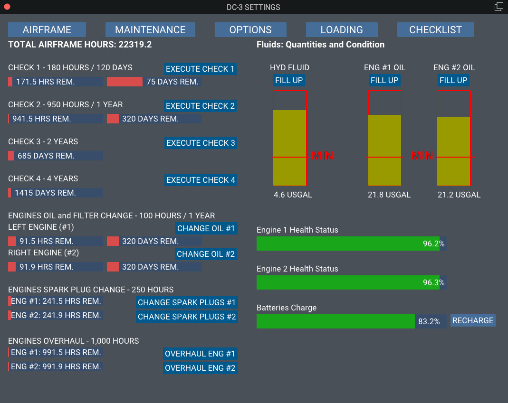
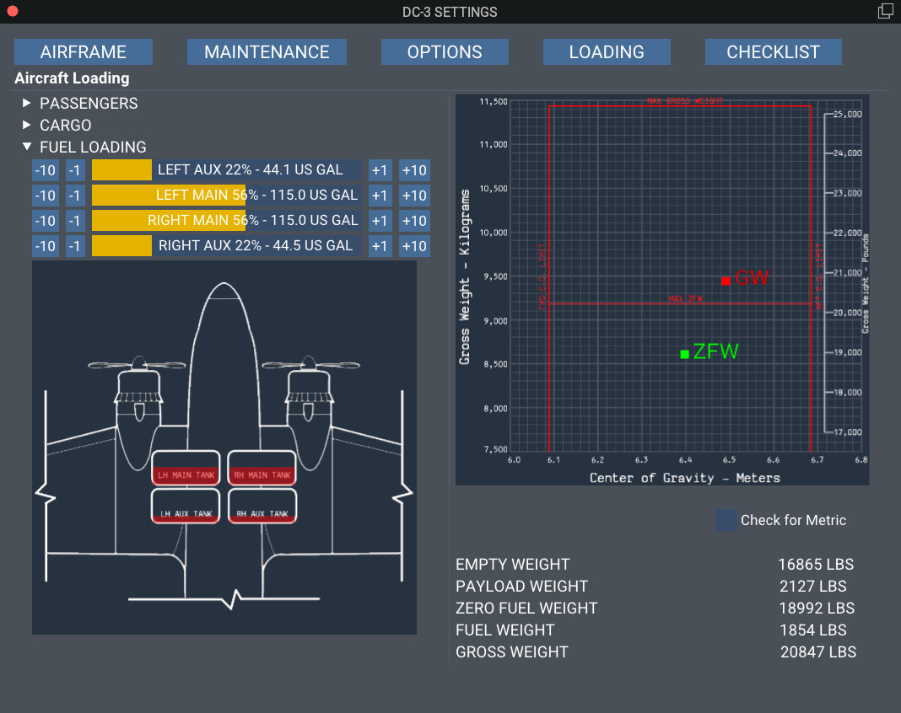

User Interface
The user interface is the means for the user to interact with various faces of the flight, and as well as set various options, aircraft loading, etc.
It is divided in 5 "tabs" or pages.
- AIRFRAME: Gives the user info about the aircraft, the available liveries, and Credits.

- MAINTENANCE: Provides a picture of aircraft's maintenance condition. More information in the maintenance page.

- OPTIONS: Here you can set the various options. Make sure that you press the SAVE button after selecting your option to be stored for the next flight. The panel state option are 4:
- Cold and Dark: The aircraft will load with all systems off.
- Powered: All electrical systems will be on.
- After Start: All ready to start taxiing. But not forget to do the checks. Always read the checklist!
- Persistent: The aircraft will load as you left her, after the last flight. By aware that each livery/airframe keeps track of her own status. Read more at the Liveries Concept page.

- LOADING: Here, on the left side, you can load the aircraft with passengers, cargo, and fuel. On the right side, you can monitor the CG, and the weights.
WARNING
Fuel loading is not possible with the engines running!

- CHECKLIST: A complete checklist, adapted for our aircraft.
Click the small arrow on the left to open a checklist, and check the items. When a checklist is completed, the color of the specific checklist will turn from red to green, and the completed is added. This allows for a quick overview which checklist is complete and which not.